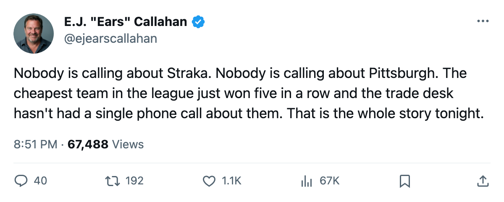
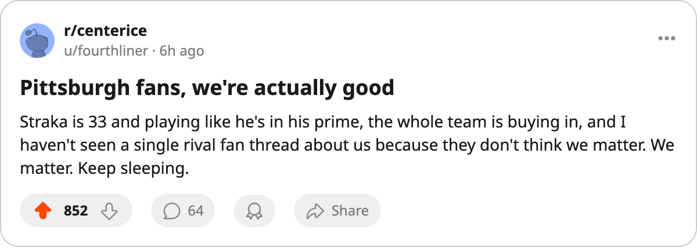

Straka at $4.20M Is the Cheapest Scoring in Hockey. Nobody Has Called About Pittsburgh.
The Penguins run at $4.89M a point, the lowest rate in the league. Their best contract-year player is 33 and producing like a man on a $10M deal.
 E.J. "Ears" CallahanInsider · The Hot Stove
E.J. "Ears" CallahanInsider · The Hot Stove

Is anyone going to call about Martin Straka before the deadline?

The  Pittsburgh Penguins Penguins sit at $4.89M per point, the cheapest rate in the 30-club league. They are 3-1-0 with 10 points, on a 5-game win streak, and they have 17 goals for and 14 against in 6 games. Nobody in the last 2 days filed a trade involving them. The free-agent pool holds 0 names. The trade column filed nothing.
Pittsburgh Penguins Penguins sit at $4.89M per point, the cheapest rate in the 30-club league. They are 3-1-0 with 10 points, on a 5-game win streak, and they have 17 goals for and 14 against in 6 games. Nobody in the last 2 days filed a trade involving them. The free-agent pool holds 0 names. The trade column filed nothing.
 Martin Straka83 has 10 points in 6 games at $4.20M. The Bureau's Book puts him at 87 overall. His morale reads 96. He is 33 years old, playing left wing, and his contract expires in May.
Martin Straka83 has 10 points in 6 games at $4.20M. The Bureau's Book puts him at 87 overall. His morale reads 96. He is 33 years old, playing left wing, and his contract expires in May.
Across the same 6 games,  Peter Forsberg95 scored 10 points at $9.90M.
Peter Forsberg95 scored 10 points at $9.90M.  Paul Kariya89, 11 in 6 at $10.11M.
Paul Kariya89, 11 in 6 at $10.11M.  Milan Hejduk88, 10 in 6 at $2.50M. All four are in the contract-year class, one year from free agency, healthy, and producing at a point-per-game clip or better. Forsberg and Kariya cost more than twice Straka's salary for the same line on the scoresheet.
Milan Hejduk88, 10 in 6 at $2.50M. All four are in the contract-year class, one year from free agency, healthy, and producing at a point-per-game clip or better. Forsberg and Kariya cost more than twice Straka's salary for the same line on the scoresheet.
Pittsburgh's math
The payroll is $48.92M, fourth-lowest in the league. Revenue: $31.07M. Profit: $19.89M. Ticket price $81, attendance 15,261 per game. They hold 5 picks and 1 first-rounder, which is the league median. Club morale reads 93.2, a middling number in a league where the bottom is 88.5 and the top is 98.4. Nothing is broken in Pittsburgh.
Rico Fata70 carries an abdomen injury and is out until 2006-01-12. That is the longest absence on the Penguins' injured list and it has not dented the streak.
What the market says, which is nothing
The trade column is blank through 2005-10-24. Five signings cleared the last 2 days, all at bottom-of-the-roster salaries:  Pavel Datsyuk76 and
Pavel Datsyuk76 and  Brendan Shanahan86 to
Brendan Shanahan86 to  Detroit Red Wings,
Detroit Red Wings,  Radek Martinek72 to
Radek Martinek72 to  New York Islanders,
New York Islanders,  Ken Klee67 to
Ken Klee67 to  Calgary Flames, Jaroslav Kristek72 to
Calgary Flames, Jaroslav Kristek72 to  Buffalo Sabres. Every one of the five is on the injured list today. None of those moves involve Pittsburgh. The thread belongs to the league.
Buffalo Sabres. Every one of the five is on the injured list today. None of those moves involve Pittsburgh. The thread belongs to the league.
What the calendar has as the trade deadline is 146 days away. Straka is under contract until May and playing at 10 points in 6 games at a salary that makes Forsberg and Kariya look like a different tax bracket. If Pittsburgh ever decides to sell, a contender gets a 33-year-old left wing with speed and a career track record and a price that won't blow up next summer.
They don't have to sell. They're winning, the room is content, and the math works. But nobody has called. That is the only story in the file.

